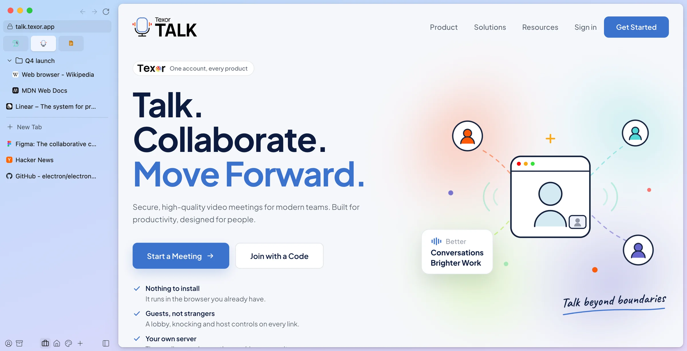
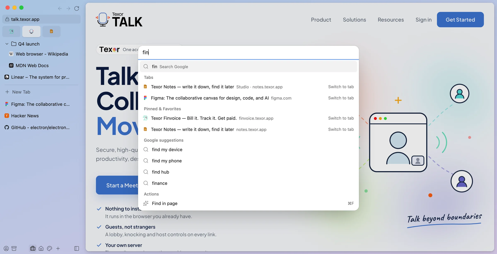
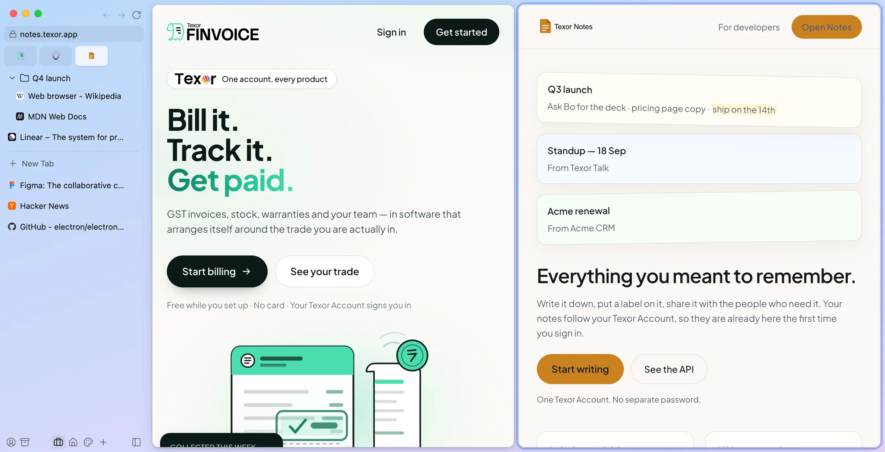
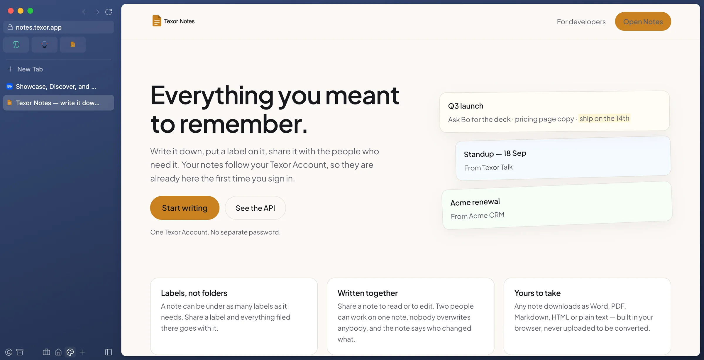
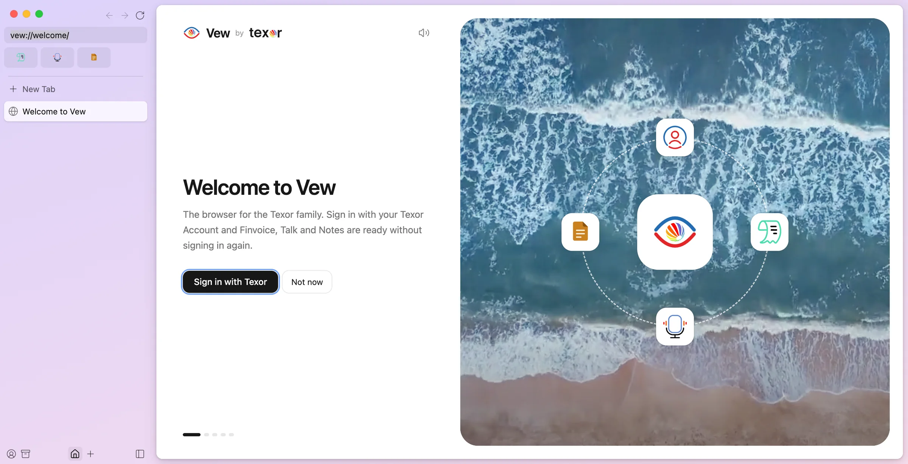

Browse. Focus. Flow.
Vew is the sidebar-first browser for the Texor family. Spaces for every part of your day, a command bar for everything, and your Texor Account built in.

⌘T Command bar for everything Signed in with TexorOne sign-in, the whole Texor family
- Texor Account
- Finvoice
- Talk
- Notes
- A sidebar, not a tab strip Favorites, pinned folders and today's tabs, all in one calm column you can collapse.
- Spaces with their own logins Work and personal side by side, each with its own theme, tabs and cookies.
- A command bar for everything Tabs, history, actions and search in one box, instant as you type.
- Split view & Peek Up to four pages side by side, and links that float over the page until you need them.
Command bar
Everything is one keystroke away
Press ⌘T (or CtrlT) and type. Vew searches every open tab in every Space, your pinned pages, your history and its own actions, and answers before you finish the word.
- Switch to a tab instead of opening a duplicate
- Copy the URL, toggle dark mode, open a new Space
- Search suggestions from the engine you choose

Split view
Two pages, one glance
Drag a tab onto the page to split it. Put the invoice next to the notes, the doc next to the call, and drag the divider to taste. Splits come back after a restart.
- Two to four panes, side by side or stacked
- Peek opens links from pinned tabs in a floating card
- A small window for links from other apps

Spaces
A Space for every part of your day
Give each Space a name, an icon and a gradient. Link it to its own profile and it keeps separate cookies and logins, so a second work account never logs out the first.
- Swipe or press a key to switch; the whole sidebar slides
- Light and dark follow your system
- Today's tabs tidy themselves into the Archive

Texor Account
Sign in once. Every Texor app follows.
Vew uses your Texor Account the way a browser should: sign in when you set it up and Finvoice, Talk and Notes open signed in. Sign out and they sign out too. It's optional: Vew works fully without an account.
- One account per profile, so work and personal stay apart
- Texor apps one click away from the sidebar
- Your sign-in stored in your system keychain

Security & privacy
Built for work that matters
The same engine as the world's most-used browser, with the guard rails switched on.
- Chromium, kept currentEvery page renders in Chromium. Vew tracks the latest stable release and updates itself in the background.
- Every site sandboxedEach page runs in a sandboxed process with no access to your files or to Vew itself.
- Trackers blockedAds and trackers are blocked out of the box, with a per-site switch when you need it.
- You decide what sites can useCamera, microphone, location and notifications are asked for per site and easy to take back.
- Profiles that never mixEach profile has its own cookies, storage and logins, isolated from the others.
- Encrypted on your deviceCookies are encrypted with your operating system's keys. Your history stays on your computer.
- macOS & WindowsOne browser on every desk
- Apple silicon, Intel, ARMNative on the hardware you have
- Chrome extensionsInstall from the Chrome Web Store
- Moves in with youImport from Chrome, Arc, Brave and Edge
Get Vew in three steps
- 1DownloadFree for macOS and Windows. One installer, made for your computer.
- 2Sign in with TexorOptional. Your Texor apps come along, signed in.
- 3Make it yoursPick a theme, bring your bookmarks, and start browsing.
Questions, answered
Is Vew free?
Yes. Vew is free to download and use on macOS and Windows.
Do I need a Texor Account?
No. Vew works fully without one. Signing in simply means Finvoice, Talk, Notes and every other Texor app open already signed in.
Which engine does Vew use?
Chromium, the open-source engine behind Chrome and Edge. Sites work in Vew the way they work there, and Vew updates to new Chromium releases automatically.
Can I bring my bookmarks and history?
Yes. The first-run setup imports bookmarks and history from Chrome, Arc, Brave and Edge in a couple of clicks.
Does Vew support extensions?
Yes. Install extensions from the Chrome Web Store or load an unpacked one from Settings; their icons sit in the sidebar.
Where is my data stored?
On your computer. History, tabs and settings live in Vew's folder on your device, cookies are encrypted with your operating system's keys, and your Texor sign-in is kept in your system keychain.